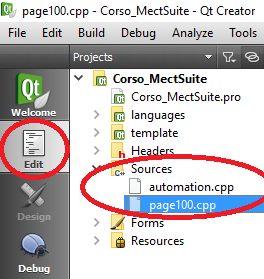
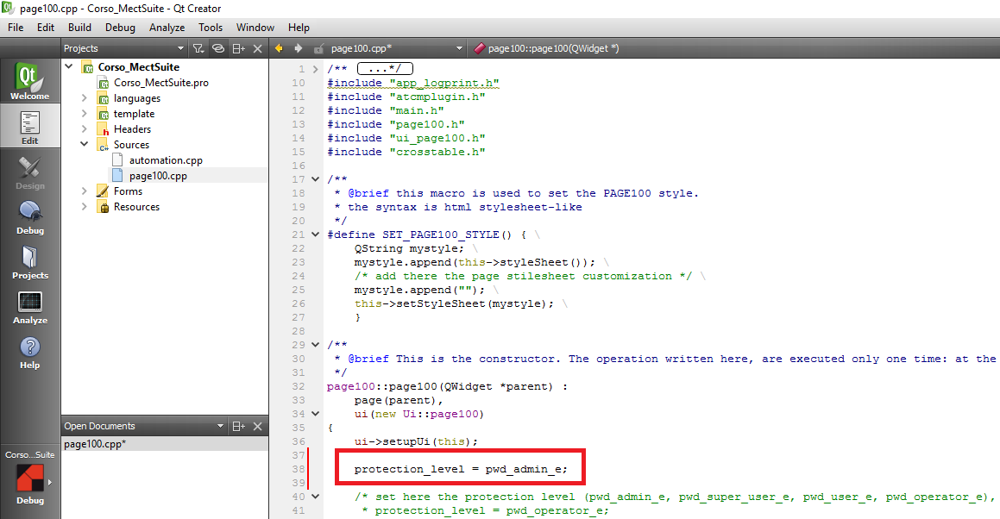

Ci possono essere due modi differenti per inserire delle password:
Associare nella property PasswordVar di un ATCMbutton una variabile o inserire direttamente una costante per proteggere:
un cambio pagina
l’azione del bottone.
In qualsiasi pagina creata, escluse quelle di libreria, è possibile associare delle password di sistema per poter permettere l’accesso.
Il meccanismo di password è gestito in modo gerarchico e ci sono i seguenti livelli:
Admin
SuperUser
User
Operator
Il livello “Admin” è il più prioritario e “User” il meno prioritario, mentre “Operator” indica che non è stato fatto alcun login quindi non c’è alcuna password attiva (funzionamento di default).
Le password sono strettamente numeriche senza particolari limitazioni sul numero di cifre.
Nell’applicazione presente sul pannello operatore ci sono due tasti coinvolti nella gestione delle password:
tasto login presente nella pagina menu: permette di effettuare il login sul sistema ovvero di impostare il livello di accesso corrente. Premendo il tasto appare il tastierino numerico nel quale inserire la password. Da questo momento in avanti le operazioni sull'interfaccia grafica sono condizionate al livello di accesso dell’utente che si è autenticato. Il pulsate di login si trasforma in pulsante di logout. Per fare il logout, sarà sufficiente premere il nuovo tasto di logout.
tasto password presente nella pagina options: permette di modificare la password dell’utente attualmente loggato. Premendo il tasto appare il tastierino numerico in cui inserire la nuova password da associare al livello utente che ha effettuato il login in precedenza.
Per impostare e proteggere una qualunque pagina da password occorre aprire la corrispondente pagina .cpp.

Per proteggere la pagina è sufficiente all’inizio del costruttore della pagina (page”N”::page”N”(QWidget *parent) ), subito sotto la riga:
ui->setupUi(this);
aggiungere la riga:
protection_level = livello minimo di login;
dove “livello minimo di login” corrisponde a:
pwd_admin_e
pwd_super_user_e
pwd_user_e
pwd_operator_e
Ad esempio, se metterò protection_level pari a pwd_user_e, potrò entrare nella pagina solo se sono loggato con la password di “User”, di “SuperUser” o di “Admin”. Altrimenti apparirà un popup per comunicare il mancato permesso di accedere alla pagina. Ricordarsi di salvare le modifiche apportate alla pagina.

Se nel costruttore della pagina non viene specificato alcun livello di accesso, la pagina ha come livello di accesso di default pwd_operator_e ovvero la pagina è accessibile da tutti i livelli utente previsti e anche da un eventuale utente che non ha effettuato il login sul sistema.
NOTA BENE: A ciascun utente è concesso di modificare unicamente la propria password. Ovvero l’utente “User” potrà modificare solo la propria password e l’utente “Admin” non potrà modificare la password di “User”.
Il tasto password è disabilitato fino a quando un utente non effettua una operazione di login.
Il login non ha scadenza se non al riavvio del pannello o se non è stato esplicitamente fatto il logout premendo il relativo tasto.